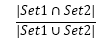

一、 概述
Google+ API以及发送API的请求
词频-逆文档频率（TF-IDF），这一分析文档中单词的基本技术
如何将NLTK（自然语言工具箱）应用到人类语言中
如何将余弦相似度应用到按关键字查询文档等常见问题中
如何通过检测搭配模式从人类语言数据中提取有用的词组
二、 探索Google+ API
人员
动态
评论
生活片段
1. 发起Google+ API
（一个用Google+API查找人的例子）
三、 TF-IDF简介
a. 句子切分
b. 分词
c. 单词组合
d. 实体检测
TF-IDF：词频-逆向文档频率。TF表示一个词语在具体文档中的重要性，IDF表示一个词语在整个语料库中的重要性，两者相乘可以同时说明这两个因素的得分。
1. 词频TF
词频可以简单的表示为它在文档中出现的次数，但是更普遍的用法是通过考虑文本中词的总数对它进行归一化。这样总分就能表示文档长度与词频的相对关系。
2. 逆文档频率IDF
逆文档频率提供的计算结果表示语料库的通用归一化度量，对于该度量值的直观理解是如果某个词在语料库中不常出现，那么就会产生一个更大的值。
词的IDF得分是文档的总数除以语料库中包含该词的文本数量的商的对数。词频的得分是基于每个文档计算的，即词的IDF分数是基于整个语料库计算的，IDF意在对整个语料库常见单词进行归一化。
3. TF-IDF
四、 用TF-IDF查询人类语言数据
1. 自然语言工具包概述
Zipf法则：语料库中单词频率的分布（长尾），提供了对预测频率有用的经验法则。
2. 对人类语言使用TF-IDF
NLTK工具集各模块的使用（nltk.stem等）
3. 寻找相似文档
(1) 向量空间模型和余弦相似度理论
除了TF-IDF将文档建模为无序的单词集合，另一个对文档建模的合适方法是向量空间模型。
向量空间模型的基本理论是认为你有一个很大的多维空间，这个空间对每个文档都有一个向量，向量的距离就表示文档间的相似度。可以将查询表示成一个向量，并通过寻找与查询向量距离最近的文档向量，来发现最相关的文档。
假设一个有两个单词的文档（“open”，“web”），那么它在向量空间中就表示为一个二维向量（有N个单词就是N维向量），其值可以用TF-IDF来表示，比如：（0.47，0.58）。那么，根据历史上的种种经验表明，两个向量之间的余弦值（即点乘）可以很好地用来表示它们的相似度（重合即为1，正交即为0），称为余弦相似度。
(2) 用余弦相似度来归类帖子
查询一个向量空间和计算文件之间的相似度是相同的操作，不同之处无非在于用查询向量和文档的向量之间的比较替代文档之间的比较。
正确以及适当地降维对于比较多维向量是一个很有必要的操作。
(3) 用矩阵图表示可视化文件相似度（D3.js）
和基于图的布局相比，矩阵图表的优势在于没有边之间的杂乱复杂，因此，你可以通过这一显示方式来避免总所周知的“毛线球”问题。
然而，行和列的顺序会影响矩阵的模式，因此需要细心地思考行和列的最佳的顺序。通常，行和列用它们附加的属性来进行排序，这样能更容易确定数据的模式。
4. 分析人类语言中的二元文法
n元文法仅仅是一个简洁的表示方法，来表示文本中n个连续词的每一种可能的顺序，并且n元文法提供了用于计算搭配的基本数据结构。
对于任意n，总有(n-1)个二元文法。n元文法的存储开销是原文档存储开销的n倍（T*n个单词，T是文档单词总数）。
NLTK可以很好地处理n元文法计算任务，发现文本中的搭配，发现一个或多个单词使用的语境。但使用NLTK内置函数的缺点就是这些函数通常不会反悔你可以存储和操作的数据结构。
评测：雅尔卡系数、相依表、排序单词的共现。
(1) 相依表和打分函数
相依表是用来计算关于二元文法度量方法的常见数据结构。表中是各个元素之间的相互的频率值，它可以计算各种相似性度量方法，它们可以用来打分，并按可能的重要性来排序二元文法。
雅卡尔系数：两个集合的相似度。

一个二元文法的雅卡尔系数表示，该二元文法的频率与所有含有感兴趣单词的二元文法出现的频率之和的比率。比率越高，(token1，token2)出现在文档中的可能性越大，搭配“token1 token2”越有可能表达有意义的概念。
其它度量方法：
a. 原始频率
b. 雅卡尔系数
c. Dice系数
d. 学生t分数
e. 卡方检验
f. 似然率
g. 逐点互信息